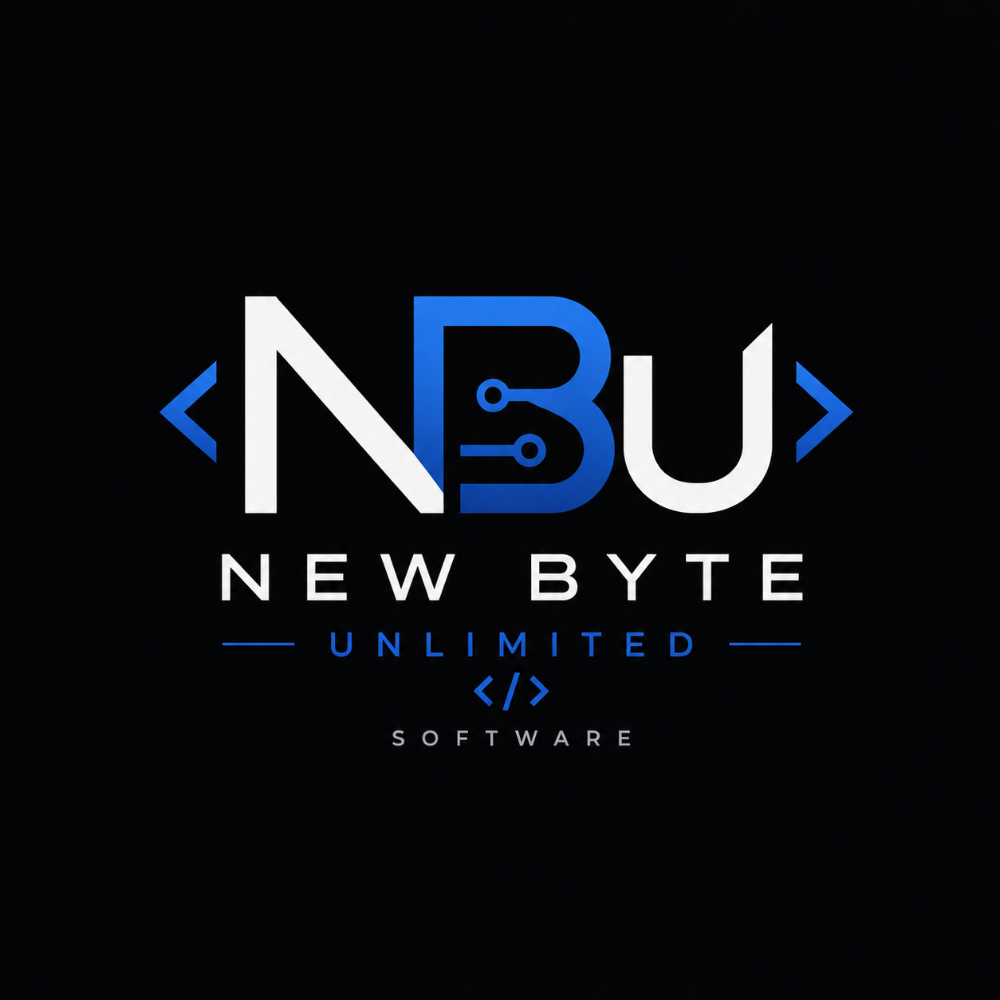
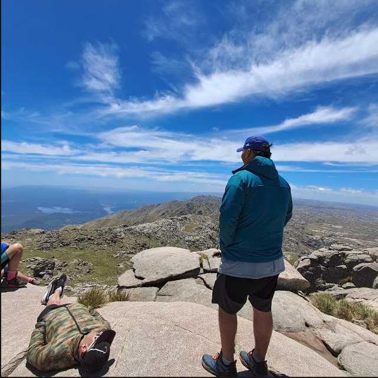

Software a medida
Aplicaciones pensadas desde cero alrededor de tus procesos, usuarios y objetivos reales.
Diseñamos y construimos soluciones digitales a medida para transformar procesos complejos en experiencias simples.

01 const future = await nbu.build({ 02 idea: "tu próximo desafío", 03 strategy: "human-centered", 04 quality: Infinity, 05 }); 06 07 future.launch();
No hacemos software por hacer.
Aplicaciones pensadas desde cero alrededor de tus procesos, usuarios y objetivos reales.
Interfaces intuitivas que convierten tecnología compleja en productos fáciles de usar.
Acompañamiento técnico para llevar una idea desde el primer boceto hasta su puesta en marcha.
Un proceso cercano, iterativo y transparente. Cada decisión técnica responde a una necesidad concreta.
Entendemos el contexto, las personas y el verdadero problema detrás del pedido.
Definimos arquitectura, experiencia y prioridades antes de escribir la solución.
Desarrollamos en ciclos cortos, con código mantenible y validación constante.
Medimos, aprendemos y acompañamos el crecimiento del producto en el tiempo.
Junto a la institución El Nacional, estamos diseñando una solución de escritorio que optimiza tareas reales, centraliza información y mejora el trabajo cotidiano.
Somos desarrolladores que disfrutan entender problemas, probar ideas y construir productos con propósito.
Desarrollo & arquitectura
Convierte necesidades de negocio en soluciones sólidas y mantenibles. Se enfoca en la arquitectura, la lógica de las aplicaciones y la integración de cada pieza del producto.

Desarrollo & producto
Conecta la visión del producto con una implementación práctica. Su mirada está puesta en definir funcionalidades útiles, ordenar prioridades y convertirlas en software confiable.
Desarrollo & experiencia
Trabaja en la intersección entre código y experiencia de usuario. Busca que cada interacción sea clara, consistente y tan intuitiva como técnicamente eficiente.